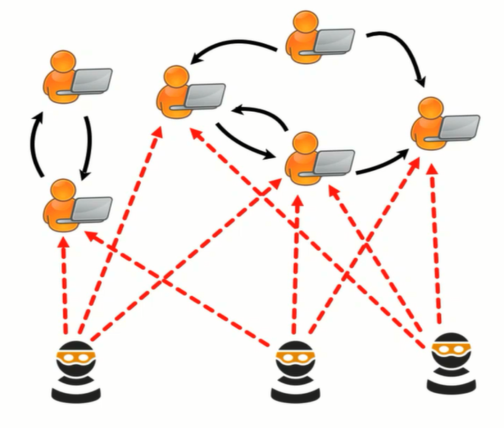
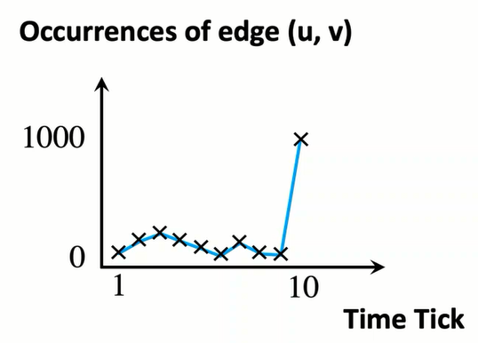
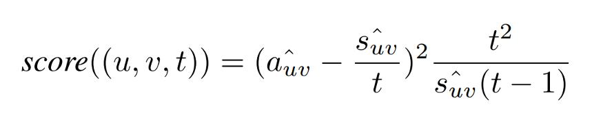
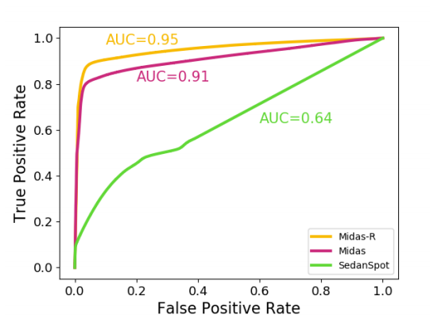

Motivation:
Denial of Service attack (DoS attack) is a cyber-attack meant to shut down a network making it inaccessible for its intended users. Recent major one on Github in February 2018 (source).

Here we can see an anomalous behavior where sudden suspicious edges are created in the dynamic graph in a short span of time.
What is a Dynamic Graph?
A Node is a visual representation of an entity and an edge is the visual representation of a relationship between the nodes represented as a line connecting them. A Graph is a non-linear data structure consisting of nodes and edges. A Graph that is subject to a sequence of updates is called a Dynamic Graph. Most of the real-world problems lie in this category including transaction networks, all IM (instant messaging) networks including twitter, Facebook etc.
Problem:
Anomaly behavior can be found in all these cases, In this article, we focus on detecting micro-cluster anomalies like suddenly arriving groups of suspiciously similar edges in the situation of DoS attack, or even tweets during a major event etc.
MIDAS: Microcluster-Based Detector of Anomalies in Edge Streams is a method
(i) To detect microcluster anomalies while providing theoretical guarantees about its false positive probability.
(ii) As it is online, thus processing each edge in constant time and constant memory, and also processes the data 162 − 644 times faster than state-of-the-art approaches.
(iii) It provides 42%-48% higher accuracy (in terms of AUC) than state-of-the-art approaches.
Method:
We’ll be inputting a time evolving graph proving an output of anomaly scores to the edges.
Assumption: Let’s say that there was a large stream of edges at the time timestamp 10 (~1000) compared to the timestamps less than 10. Shown in the figure below. Mean level at t=10 equals mean level for t less than 10.

Considering this assumption we use Count-Min-Sketch data structure which uses hash functions to map events to frequencies unlike the hash table this uses sub-linear space where the collisions might happen which is considered as the cost due to the use of sub-linear space, more details can be found in this paper.
(i) sᵤᵥ: u-v edges up to time t
(ii) aᵤᵥ: u-v edges at current time t
(iii) ŝᵤᵥ: Approximate total count
(iv) âᵤᵥ: Approximate current count
Anomaly score is given by

Fast and Accurate:Compared to the recent methods for finding anomalies in edge streams in Dynamic Graphs like SEDANSPOT takes large computation time due to as it requires several subprocesses (random-walking, sampling, etc). For DARPA dataset the running time is ~1.2 min for SEDANSPOT where as MIDAS less than 0.4 sec computation time.
MIDAS has better accuracy and precision compared to the SEDANSPOT on the DARPA dataset.

ROC for DARPA dataset
You can find the source code for MIDAS through this link, Paper.
Implementation: